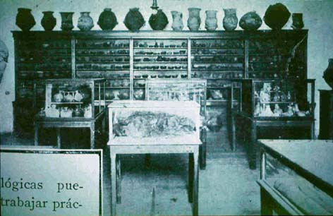

|
|  |
| Museo Etnográfico, Universidad de
Buenos Aires, ca. 1910 |
Archaeology as a discipline that started to become institutionalized in
Latin America towards the end of the nineteenth century, the material
testimonies of the native past only now becoming the object of state
protection against looters and foreign collectors and adventurers. In
part, this re-valorization of indigenous cultures of the past was aimed
at forging a kind of "national antiquity", thus showing the "new"
nations of Chile, Brazil and Argentina to be equally deeply rooted in
time as those of the Mediterranean. The incipient American archaeology,
then, associated a prolific material culture with a comparatively high
level of "civilization", whereas the relatively unsophisticated
material possessions of nomadic societies in the Amazon or Tierra del
Fuego were supposed to be a sign of these societies' "barbaric" state
of "savagery".

|